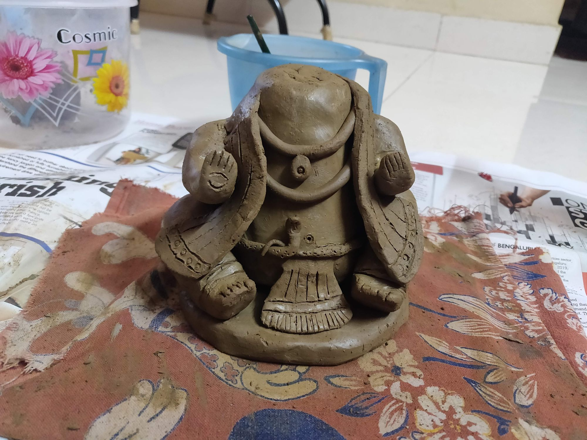
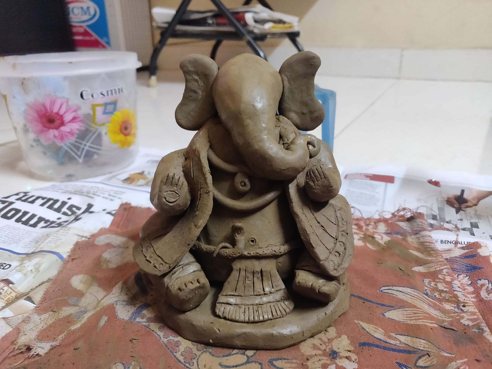
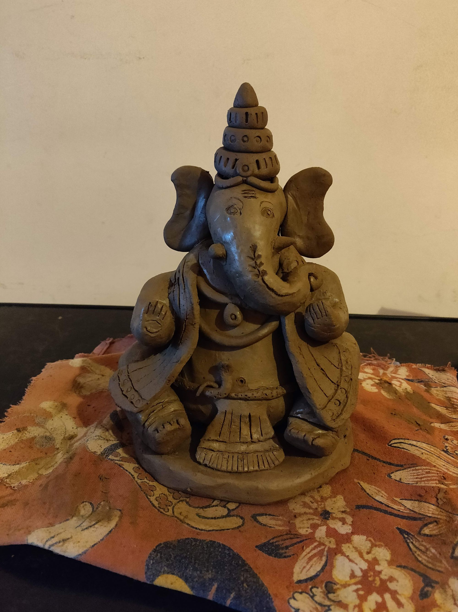
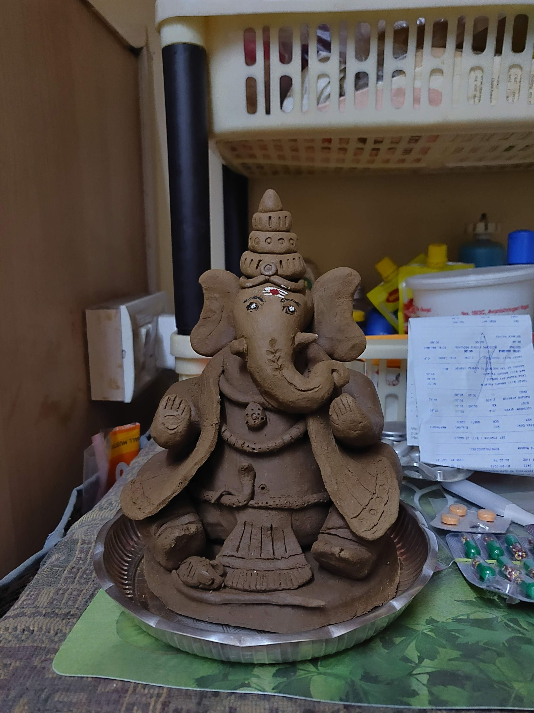
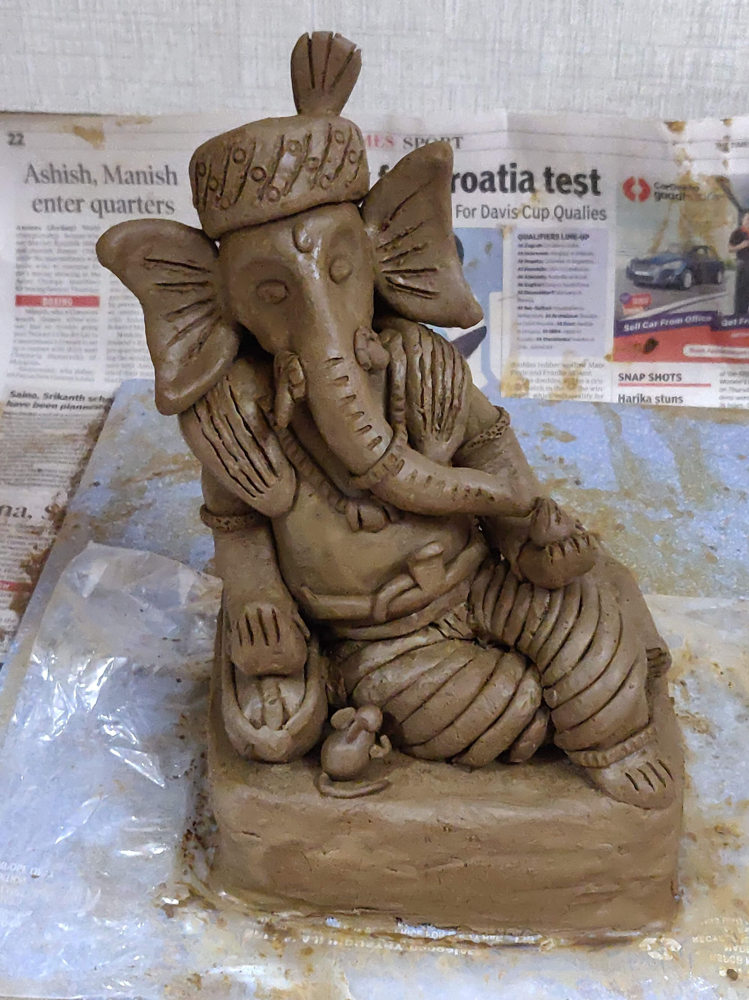
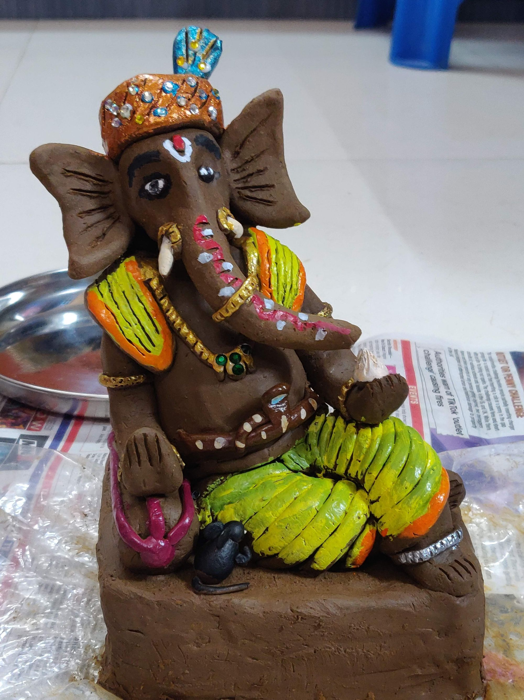

Making Ganesha Idol at home every year for Ganesh Chaturthi festival.
Well its -
- Recycling clay from last year
- Eco friendly (no harmful paints released in local water bodies)
- Fun activity for a weekend (especially after long boring work week 🙂)
2019
My first time attempting at making my own Ganesha.




2020
Adding a bit more color this time. And moving away from the traditional sitting style, to a bit more relaxed Ganesha.


